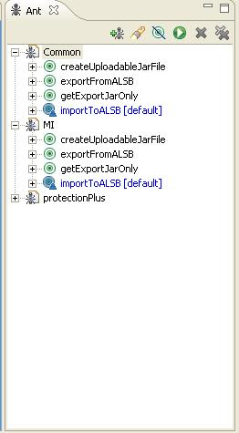

ALSB SYNC (beta)
Keeps SVN and ALSB in
sync!
Introduction
The idea behind this
utility is to make it easier to sync the ALSB configuration on your local
machine with SVN.
It will typically be
used with Eclipse, although use with Tortoise is also possible.
Using it with eclipse
will give you a groovy ant menu for each ALSB project like this.
|
The ant menu allows you to easily grab your config
and compare it With what is currently in SVN. One menu for each project 2 simple tasks: import and export |
 |
Installation
This is a 2 stage
process.
1)
Configure the utility with the details of your service bus
First of all, open up the ALSBSync project in
Eclipse. Then in the conf/generalConfiguration.properties there are 4
properties to configure. This only needs to be done ONCE:
a.
alsb.bea.homedir this is used to set up the classpath.
There needs to be an ALSB installation in this home
b.
adminUrl the url of
your ALSB admin server
c.
user username to log into the admin server
d.
password password to log into the admin server
2)
Create a configuration for each ALSB project that
you want to use
there is a sample for you to base
your configuration on, so this is pretty easy.
a.
Copy the
sample MI project from the doc/samples directory into the projects directory
b.
Rename the
project to the name of your ALSB project
c.
Configure import-export
properties
1.
Set the
project name to the name of your project AS IT APPEARS IN ALSB.
2.
Set the unzipToDir to the fully qualified path to your eclipse
project
d.
Configure the
ant build script
1.
set the project name to
the name of the project. This will determine how the menu appears in Eclipse
Once you have followed
these steps, you can then open up your new ant script within the ANT view of
eclipse. If it doesn’t look like the screenshot above you can give the
developer a good slippering.
Subversion
sync Process
In the majority of
cases, we will only need to follow these 4 steps
1)
Update:
using your Eclipse SVN client
this makes sure that you get any config changes that your colleagues may have
made.
2)
Import:
use the importToALSB ant task
this step is to prove that your config changes are compatible with those of the
rest of our team.
If this task completes successfully, then we have a viable configuration, and
can proceed to the next step. If it fails, then we need to do a manual import
(see below)
3)
Export: use
the exportFromALSB task
this will export your project from ALSB to a jar file in the temp directory and
then unzip into the local SVN directory that you specified for this project.
You can then use your usual SVN tools (tortoise / eclipse…) to check for and
resolve conflicts. Once this step is complete, you know you have a
configuration snapshot which is deployable, and contains everyone else’s
modifications
4)
Commit:
using Eclipse
add a comment, check in, and it’s finished!
Manual
import
In some cases, the import
step above - as an automated task - may not be sufficient.
This will usually happen
when there is a conflict between your configuration and that of another
developer working on the same project.
For example, Adil may
have moved a schema that your proxy service relies on to a common project. When
you run the import in step (2), the service bus is no longer able to resolve
that schema reference.
Since that will cause a
conflict in the service bus console, the utility is not able to commit the session
automatically, so the session is discarded.
In that case:
1)
Do the update step
as described above
2)
Use the createUploadableJarFile task to create a jar. (This will be
written to the tmp directory)
3)
Use the service
bus console to upload the jar, and resolve the dependencies manually!
Bob tumhara
chacha hai! *
*Bob’s yer uncle!